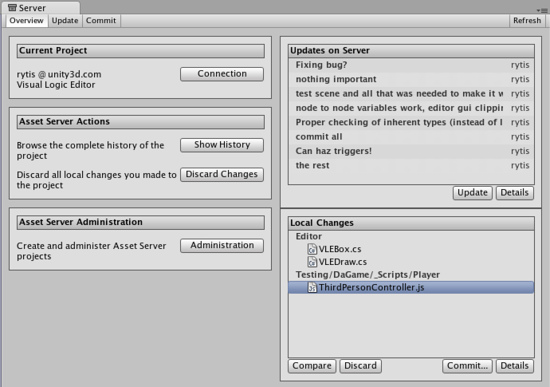
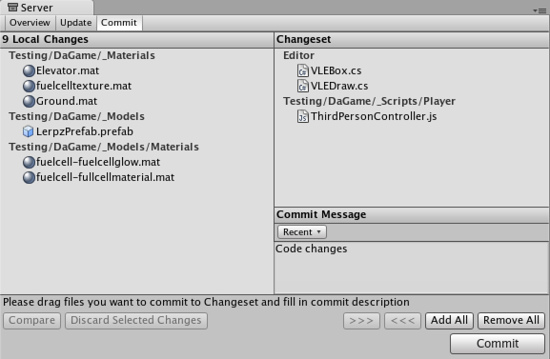
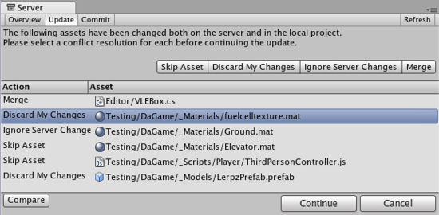
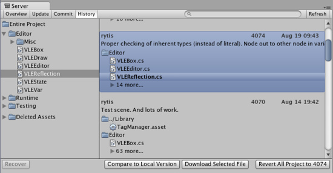
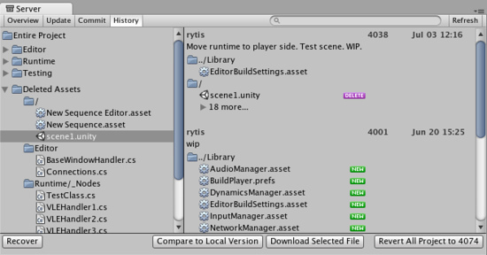

Asset Server (Pro Only)
Unity Asset Server Overview
The Unity Asset Server is an asset and version control system with a graphical user interface integrated into Unity. It is meant to be used by team members working together on a project on different computers either in-person or remotely. The Asset Server is highly optimized for handling large binary assets in order to cope with large multi gigabyte project folders. When uploading assets, Import Settings and other meta data about each asset is uploaded to the asset server as well. Renaming and moving files is at the core of the system and well supported.
It is available only for Unity Pro, and is an additional license per client. To purchase an Asset Server Client License, please visit the Unity store at http://unity3d.com/store
New to Source Control?
If you have never used Source Control before, it can be a little unfriendly to get started with any versioning system. Source Control works by storing an entire collection of all your assets - meshes, textures, materials, scripts, and everything else - in a database on some kind of server. That server might be your home computer, the same one that you use to run Unity. It might be a different computer in your local network. It might be a remote machine colocated in a different part of the world. It could even be a virtual machine. There are a lot of options, but the location of the server doesn't matter at all. The important thing is that you can access it somehow over your network, and that it stores your game data.
In a way, the Asset Server functions as a backup of your Project Folder. You do not directly manipulate the contents of the Asset Server while you are developing. You make changes to your Project locally, then when you are done, you to the Project on the Server. This makes your local Project and the Asset Server Project identical.
Now, when your fellow developers make a change, the Asset Server is identical to their Project, but not yours. To synchronize your local Project, you request to . Now, whatever changes your team members have made will be downloaded from the server to your local Project.
This is the basic workflow for using the Asset Server. In addition to this basic functionality, the Asset Server allows for rollback to previous versions of assets, detailed file comparison, merging two different scripts, resolving conflicts, and recovering deleted assets.
Setting up the Asset Server
The Asset Server requires a one time server setup and a client configuration for each user. You can read about how to do that in the Asset Server Setup page.
The rest of this guide explains how to deploy, administrate, and regularly use the Asset Server.
Daily use of the Asset Server
This section explains the common tasks, workflow and best practices for using the Asset Server on a day-to-day basis.
Getting Started
If you are joining a team that has a lot of work stored on the Asset Server already, this is the quickest way to get up and running correctly. If you are starting your own project from scratch, you can skip down to the Workflow Fundamentals section.
- Create a new empty Project with no packages imported
- Go to and select as the version control mode
- From the menubar, select
- Click the button
- Enter your user name and password (provided by your Asset Server administrator)
- Click and select the desired project
- Click
- Click the tab
- Click the button
- If a conflict occurs, discard all local versions
- Wait for the update to complete
- You are ready to go
Continue reading for detailed information on how to use the Asset Server effectively every day.
Workflow Fundamentals
When using the Asset Server with a multi-person team, it is generally good practice to Update all changed assets from the server when you begin working, and Commit your changes at the end of the day, or whenever you're done working. You should also commit changes when you have made significant progress on something, even if it is in the middle of the day. Committing your changes regularly and frequently is recommended.
Understanding the Server View
The Server View is your window into the Asset Server you're connected to. You can open the Server View by selecting .

The Overview tab
The Overview tab
The Server View is broken into tabs: Overview Update, and Commit. Overview will show you any differences between your local project and the latest version on the server with options to quickly commit local changes or download the latest updates. Update will show you the latest remote changes on the server and allow you to download them to your local project. Commit allows you to create a Changeset and commit it to the server for others to download.
Connecting to the server
Before you can use the asset server, you must connect to it. To do this you click the button, which takes you to the connection screen:

The Asset Server connection screen
Here you need to fill in:
- Server address
- Username
- Password
By clicking you can now see the available projects on the asset server, and choose which one to connect to by clicking . Note that the username and password you use can be obtain from your system administrator. Your system administrator created accounts when they installed Asset Server.
Updating from the Server
To download all updates from the server, select the tab from the Overview tab and you will see a list of the latest committed Changesets. By selecting one of these you can see what was changed in the project as well as the provided commit message. Click and you will begin downloading all Changeset updates.

The Update Tab
Committing Changes to the Server
When you have made a change to your local project and you want to store those changes on the server, you use the top tab.

The Commit tab
The Commit tab
Now you will be able to see all the local changes made to the project since your last update, and will be able to select which changes you wish to upload to the server. You can add changes to the changeset either by manually dragging them into the changeset field, or by using the buttons placed below the commit message field. Remember to type in a commit message which will help you when you compare versions or revert to an earlier version later on, both of which are discussed below.
Resolving conflicts
With multiple people working on the same collection of data, conflicts will inevitably arise. Remember, there is no need to panic! If a conflict exists, you will be presented with the Conflict Resolution dialog when updating your project.

The Conflict Resolution screen
The Conflict Resolution screen
Here, you will be informed of each individual conflict, and be presented with different options to resolve each individual conflict. For any single conflict, you can select (which will not download that asset from the server), (which will completely overwrite your local version of the asset) or (which will ignore the changes others made to the asset and after this update you will be able to commit your local changes over server ones) for each individual conflict. Additionally, you can select for text assets like scripts to merge the server version with the local version.
Note: If you choose to discard your changes, the asset will be updated to the latest version from the server (i.e., it will incorporate other users' changes that have been made while you were working). If you want to get the asset back as it was when you started working, you should revert to the specific version that you checked out. (See Browsing revision history and reverting assets below.)
If you run into a conflict while you are committing your local changes, Unity will refuse to commit your changes and inform you that a conflict exists. To resolve the conflicts, select . Your local changes will not automatically be overwritten. At this point you will see the Conflict Resolution dialog, and can follow the instructions in the above paragraph.
Browsing revision history and reverting assets
The Asset Server retains all uploaded versions of an asset in its database, so you can revert your local version to an earlier version at any time. You can either select to restore the entire project or single files. To revert to an older version of an asset or a project, select the Overview tab then click Show History listed under Asset Server Actions. You will now see a list of all commits and be able to select and restore any file or all project to an older version.

The History dialog
The History dialog
Here, you can see the version number and added comments with each version of the asset or project. This is one reason why descriptive comments are helpful. Select any asset to see its history or for all changes made in project. Find revision you need. You can either select whole revision or particular asset in revision. Then click to get your local asset replaced with a copy of the selected revision. will revert entire project to selected revision.
Prior to reverting, if there are any differences between your local version and the selected server version, those changes will be lost when the local version is reverted.
If you only want to abandon the changes made to the local copy, you don't have to revert. You can discard those local modifications by selecting in the main asset server window. This will immediately download the current version of the project from the server to your local Project.
Comparing asset versions
If you're curious to see the differences between two particular versions you can explicitly compare them. To do this, open window, select revision and asset you want to compare and press . If you need to compare two different revisions of an asset - right click on it, in the context menu select then find revision you want to compare to and select it.
Note: this feature requires that you have one of supported file diff/merge tools installed. Supported tools are:
- On Windows:
- TortoiseMerge: part of TortoiseSVN or a separate download from the project site.
- WinMerge.
- SourceGear Diff/Merge.
- Perforce Merge (p4merge): part of Perforce's visual client suite (P4V).
- TkDiff.
- On Mac OS X:
- SourceGear Diff/Merge.
- FileMerge: part of Apple's XCode development tools.
- TkDiff.
- Perforce Merge (p4merge): part of Perforce's visual client suite (P4V).
Recovering deleted assets
Deleting a local asset and committing the delete to the server will in fact not delete an asset permanently. Just as any previous version of an asset can be restored through window from the Overview tab.

The History dialog
The History dialog
Expand item, find and select assets from the list and hit , the selected assets will be downloaded and re-added to the local project. If the folder that the asset was located in before the deletion still exists, the asset will be restored to the original location, otherwise it will be added to the root of the Assets folder in the local project.
Best Practices & Common Issues
This is a compilation of best practices and solutions to problems which will help you when using the Asset Server:
- Backup, Backup, Backup
- Maintain a backup of your database. It is very important to do this. In the unfortunate case that you have a hardware problem, a virus, a user error, etc you may loose all of your work. Therefore make sure you have a backup system in place. You can find lots of resources online for setting up backup systems.
- Stop the server before shutting the machine down
- This can prevent "fast shutdowns" from being generated in the PostgreSQL (Asset Server) log. If this occurs the Asset Server has to do a recovery due to an improper shut down. This can take a very long time if you have a large project with many commits.
- Resetting you password from Console
- You can reset your password directly from a shell, console or command line using the following command:
psql -U unitysrv -d template1 -c"alter role admin with password 'MYPASSWORD'"
- You can reset your password directly from a shell, console or command line using the following command:
- Can't connect to Asset Server
- The password may have expired. Try resetting your password.
- Also the username is case sensitive: "Admin" != "admin". Make sure you are using the correct case.
- Make sure the server is actually running:
- On OS X or Linux you can type on the terminal: ps -aux
- On Windows you can use the Task Manager.
- Verify that the Asset Server is not running on more than one computer in your Network. You could be connecting to the wrong one.
- The Asset Server doesn't work in 64-bit Linux
- The asset server can run OK on 64-bit Linux machines if you install 32-bit versions of the required packages. You can use "dpkg -i --force-architecture" to do this.
- Use the Asset Server logs to get more information
- Windows:
- \Unity\AssetServer\log
- OS X:
- /Library/UnityAssetServer/log
- Windows:
Asset Server training complete
You should now be equipped with the knowledge you need to start using the Asset Server effectively. Get to it, and don't forget the good workflow fundamentals. Commit changes often, and don't be afraid of losing anything.
Page last updated: 2011-10-31